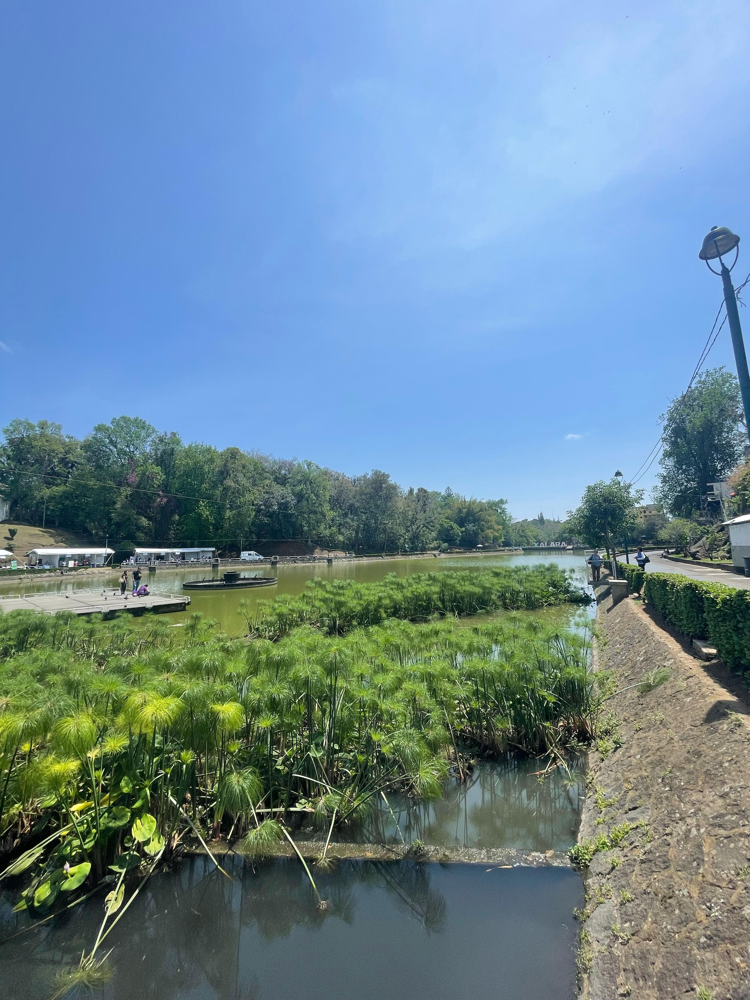

Por un Xalapa más verde!
Tú puedes hacer la diferencia, una conciencia a la vez.
Tú puedes hacer la diferencia, una conciencia a la vez.



El Parque de los Lagos es un atractivo turístico ubicado en Xalapa, Veracruz, México. Este parque es conocido por sus hermosos lagos y su entorno natural, que ofrece a los visitantes un espacio ideal para disfrutar del aire libre y la naturaleza. El parque cuenta con senderos para caminatas, áreas de picnic y zonas de recreación, lo que lo hace perfecto para familias y amantes de la naturaleza.
Checa algunas áreas verdes que te pueden interesar